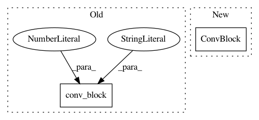

d86291e09b2435bcf61de54dd29835e54d65ad63,batchflow/models/tf/layers/resize.py,,subpixel_conv,#Any#Any#Any#Any#,127
Before Change
x = inputs
with tf.variable_scope(name):
if layout:
x = conv_block(inputs, layout, kernel_size=1, name="conv", data_format=data_format, **kwargs)
x = depth_to_space(x, block_size=factor, name="d2s", data_format=data_format)
return x
After Change
with tf.variable_scope(name):
if layout:
from .conv_block import ConvBlock
x = ConvBlock(layout, kernel_size=1, name="conv", data_format=data_format, **kwargs)(inputs)
x = depth_to_space(x, block_size=factor, name="d2s", data_format=data_format)
return x
In pattern: SUPERPATTERN
Frequency: 3
Non-data size: 2
Instances
Project Name: analysiscenter/batchflow
Commit Name: d86291e09b2435bcf61de54dd29835e54d65ad63
Time: 2019-08-19
Author: Tsimfer.SA@gazprom-neft.ru
File Name: batchflow/models/tf/layers/resize.py
Class Name:
Method Name: subpixel_conv
Project Name: analysiscenter/batchflow
Commit Name: dcc6c0efb8854e2030c9ad812c4ba1fc3e4e5c69
Time: 2019-08-19
Author: Tsimfer.SA@gazprom-neft.ru
File Name: batchflow/models/tf/layers/pyramid.py
Class Name:
Method Name: aspp
Project Name: analysiscenter/batchflow
Commit Name: d86291e09b2435bcf61de54dd29835e54d65ad63
Time: 2019-08-19
Author: Tsimfer.SA@gazprom-neft.ru
File Name: batchflow/models/tf/layers/resize.py
Class Name:
Method Name: resize_bilinear_additive